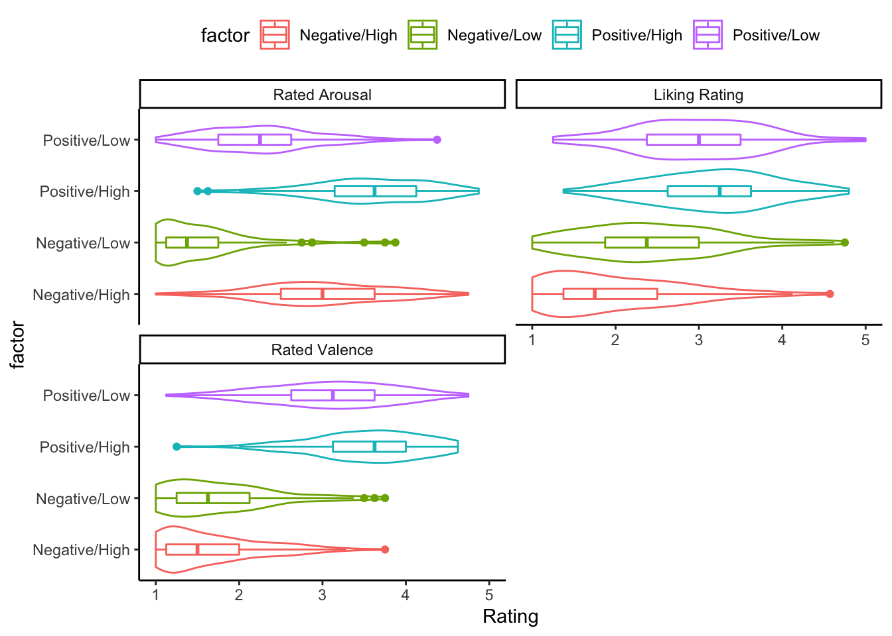

Last updated: 2020-07-24
Checks: 5 2
Knit directory: alexithymia_physiology_2019/
This reproducible R Markdown analysis was created with workflowr (version 1.6.2). The Checks tab describes the reproducibility checks that were applied when the results were created. The Past versions tab lists the development history.
The R Markdown is untracked by Git. To know which version of the R Markdown file created these results, you’ll want to first commit it to the Git repo. If you’re still working on the analysis, you can ignore this warning. When you’re finished, you can run wflow_publish to commit the R Markdown file and build the HTML.
Great job! The global environment was empty. Objects defined in the global environment can affect the analysis in your R Markdown file in unknown ways. For reproduciblity it’s best to always run the code in an empty environment.
The command set.seed(20200723) was run prior to running the code in the R Markdown file. Setting a seed ensures that any results that rely on randomness, e.g. subsampling or permutations, are reproducible.
Great job! Recording the operating system, R version, and package versions is critical for reproducibility.
To ensure reproducibility of the results, delete the cache directory describe_cache and re-run the analysis. To have workflowr automatically delete the cache directory prior to building the file, set delete_cache = TRUE when running wflow_build() or wflow_publish().
Great job! Using relative paths to the files within your workflowr project makes it easier to run your code on other machines.
Great! You are using Git for version control. Tracking code development and connecting the code version to the results is critical for reproducibility.
The results in this page were generated with repository version f1c0a7e. See the Past versions tab to see a history of the changes made to the R Markdown and HTML files.
Note that you need to be careful to ensure that all relevant files for the analysis have been committed to Git prior to generating the results (you can use wflow_publish or wflow_git_commit). workflowr only checks the R Markdown file, but you know if there are other scripts or data files that it depends on. Below is the status of the Git repository when the results were generated:
Ignored files:
Ignored: .DS_Store
Ignored: .RData
Ignored: .Rhistory
Ignored: .Rproj.user/
Ignored: analysis/describe_cache/
Untracked files:
Untracked: analysis/describe.rmd
Untracked: data/grouped_self_report.csv
Untracked: data/self_report_only.csv
Untracked: data_cleaning/join_files.R
Unstaged changes:
Modified: analysis/_site.yml
Deleted: code/README.md
Note that any generated files, e.g. HTML, png, CSS, etc., are not included in this status report because it is ok for generated content to have uncommitted changes.
There are no past versions. Publish this analysis with wflow_publish() to start tracking its development.
The data collected involve trait measures of personality, along with in the moment measures of musical responses.
This page gives a high level overview of the data. Focusing on descriptive statistics and visualisations.
Rows: 10
Columns: 72
$ id <dbl> 55, 96, 44, 4, 9, 113, 60, 24, 75, 115
$ tas <dbl> 37, 34, 60, 42, 66, 50, 55, 63, 48, 53
$ depression <dbl> 2, 0, 13, 8, 7, 2, 2, 4, 1, 5
$ dif <dbl> 8, 10, 21, 15, 31, 18, 17, 28, 16, 18
$ ddf <dbl> 13, 10, 18, 9, 20, 13, 18, 20, 12, 16
$ eot <dbl> 16, 14, 21, 18, 15, 19, 20, 15, 20, 19
$ tas_1 <dbl> 1, 4, 2, 2, 5, 2, 2, 4, 2, 4
$ tas_2 <dbl> 2, 4, 4, 2, 4, 2, 2, 4, 2, 4
$ tas_3 <dbl> 1, 1, 2, 3, 4, 3, 1, 3, 1, 2
$ tas_4 <dbl> 4, 3, 5, 4, 1, 4, 4, 2, 3, 4
$ tas_5 <dbl> 4, 3, 5, 5, 4, 3, 5, 4, 4, 4
$ tas_6 <dbl> 2, 1, 4, 2, 5, 2, 4, 5, 4, 2
$ tas_7 <dbl> 1, 1, 3, 2, 4, 3, 3, 4, 2, 3
$ tas_8 <dbl> 3, 1, 2, 5, 3, 2, 2, 1, 2, 1
$ tas_9 <dbl> 1, 1, 3, 2, 5, 3, 3, 4, 3, 4
$ tas_10 <dbl> 5, 4, 4, 2, 5, 3, 4, 4, 4, 4
$ tas_11 <dbl> 3, 1, 4, 2, 5, 2, 4, 5, 3, 4
$ tas_12 <dbl> 2, 1, 4, 2, 4, 3, 5, 3, 2, 2
$ tas_13 <dbl> 1, 1, 4, 2, 5, 2, 2, 5, 2, 1
$ tas_14 <dbl> 1, 1, 3, 2, 3, 3, 2, 3, 2, 2
$ tas_15 <dbl> 3, 3, 3, 2, 1, 4, 4, 4, 4, 5
$ tas_16 <dbl> 1, 2, 4, 1, 2, 1, 4, 1, 5, 1
$ tas_17 <dbl> 4, 1, 5, 1, 2, 4, 5, 4, 2, 4
$ tas_18 <dbl> 3, 5, 4, 5, 4, 3, 5, 5, 5, 4
$ tas_19 <dbl> 4, 5, 3, 3, 4, 5, 2, 3, 4, 5
$ tas_20 <dbl> 1, 1, 4, 1, 2, 2, 2, 1, 2, 5
$ tas_4r <dbl> 2, 3, 1, 2, 5, 2, 2, 4, 3, 2
$ tas_5r <dbl> 2, 3, 1, 1, 2, 3, 1, 2, 2, 2
$ tas_10r <dbl> 1, 2, 2, 4, 1, 3, 2, 2, 2, 2
$ tas_18r <dbl> 3, 1, 2, 1, 2, 3, 1, 1, 1, 2
$ tas_19r <dbl> 2, 1, 3, 3, 2, 1, 4, 3, 2, 1
$ dass_3 <dbl> 1, 0, 3, 1, 1, 0, 0, 0, 0, 0
$ dass_5 <dbl> 1, 0, 3, 3, 2, 1, 1, 3, 1, 0
$ dass_10 <dbl> 0, 0, 3, 2, 2, 0, 0, 0, 0, 2
$ dass_13 <dbl> 0, 0, 2, 1, 2, 0, 1, 0, 0, 1
$ dass_16 <dbl> 0, 0, 0, 1, 0, 0, 0, 0, 0, 2
$ dass_17 <dbl> 0, 0, 2, 0, 0, 0, 0, 1, 0, 0
$ dass_21 <dbl> 0, 0, 0, 0, 0, 1, 0, 0, 0, 0
$ gender <chr> "female", "female", "female", "male", "female…
$ age <dbl> 18, NA, 19, 21, 20, 22, 18, 20, 19, 17
$ musichours <chr> "3 hours", "4 hours", "More than 5 hours", "M…
$ yearsplay <chr> "More than 5 years", "4 years musical experie…
$ X1_1 <dbl> 1724, 3014, 1371, 102, 280, 3521, 1875, 733, …
$ participant <chr> "055", "096", "044", "004", "009", "113", "06…
$ song <chr> "30MonoWAV/30MonoT1.wav", "30MonoWAV/30MonoT1…
$ valence_target <chr> "positive", "positive", "positive", "negative…
$ arousal_target <chr> "low", "low", "low", "high", "high", "low", "…
$ affectcat <dbl> 4, 4, 4, 2, 1, 3, 1, 3, 2, 3
$ songmark <dbl> 13, 13, 15, 4, 7, 12, 6, 10, 3, 12
$ word <chr> "EXCITED", "ANGRY", "HAPPY", "ALERT", "FRUSTR…
$ songtrials_this_trial_n <dbl> 1, 11, 9, 5, 7, 8, 8, 2, 8, 10
$ rep_number <dbl> 1, 0, 0, 0, 1, 0, 0, 0, 1, 1
$ trial_number <dbl> 17, 11, 9, 5, 23, 8, 8, 2, 24, 26
$ arousal_rating <dbl> 1, 2, 3, 4, 5, 1, 2, 1, 1, 1
$ valence_rating <dbl> 2, 1, 4, 4, 4, 2, 3, 3, 1, 1
$ liking <dbl> 3, 2, 4, NA, NA, 4, 3, 3, 1, 1
$ emotion_rating <dbl> 1, 1, 4, 5, 1, 3, 1, 1, 2, 1
$ emotion_target <chr> "tender", "tender", "tender", "fear", "happy"…
$ anxious <dbl> 1, 1, 3, 4, 1, 3, 1, 2, 4, 2
$ ashamed <dbl> 1, 1, 2, 2, 1, 2, 1, 1, 1, 1
$ scared <dbl> 1, 1, 2, 2, 1, 1, 1, 1, 3, 1
$ alert <dbl> 1, 1, 4, 5, 4, 3, 3, 2, 2, 1
$ angry <dbl> 1, 1, 2, 1, 1, 2, 1, 1, 2, 3
$ happy <dbl> 2, 2, 4, 2, 5, 1, 3, 1, 1, 1
$ active <dbl> 1, 1, 3, 5, 4, 1, 3, 2, 1, 1
$ sad <dbl> 1, 2, 4, 2, 1, 4, 1, 3, 1, 4
$ guilty <dbl> 1, 1, 3, 1, 1, 2, 1, 2, 1, 3
$ tender <dbl> 1, 4, 3, 1, 1, 2, 1, 2, 1, 1
$ frustrated <dbl> 1, 1, 2, 2, 1, 2, 1, 2, 2, 1
$ excited <dbl> 1, 1, 4, 4, 4, 1, 2, 1, 1, 1
$ na <lgl> NA, NA, NA, NA, NA, NA, NA, NA, NA, NA
$ factor <chr> "Positive/Low", "Positive/Low", "Positive/Low…| id | tas | depression | dif | ddf | eot | tas_1 | tas_2 | tas_3 | tas_4 | tas_5 | tas_6 | tas_7 | tas_8 | tas_9 | tas_10 | tas_11 | tas_12 | tas_13 | tas_14 | tas_15 | tas_16 | tas_17 | tas_18 | tas_19 | tas_20 | tas_4r | tas_5r | tas_10r | tas_18r | tas_19r | dass_3 | dass_5 | dass_10 | dass_13 | dass_16 | dass_17 | dass_21 | gender | age | musichours | yearsplay | X1_1 | participant | song | valence_target | arousal_target | affectcat | songmark | word | songtrials_this_trial_n | rep_number | trial_number | arousal_rating | valence_rating | liking | emotion_rating | emotion_target | anxious | ashamed | scared | alert | angry | happy | active | sad | guilty | tender | frustrated | excited | na | factor |
|---|---|---|---|---|---|---|---|---|---|---|---|---|---|---|---|---|---|---|---|---|---|---|---|---|---|---|---|---|---|---|---|---|---|---|---|---|---|---|---|---|---|---|---|---|---|---|---|---|---|---|---|---|---|---|---|---|---|---|---|---|---|---|---|---|---|---|---|---|---|---|---|
| 55 | 37 | 2 | 8 | 13 | 16 | 1 | 2 | 1 | 4 | 4 | 2 | 1 | 3 | 1 | 5 | 3 | 2 | 1 | 1 | 3 | 1 | 4 | 3 | 4 | 1 | 2 | 2 | 1 | 3 | 2 | 1 | 1 | 0 | 0 | 0 | 0 | 0 | female | 18 | 3 hours | More than 5 years | 1724 | 055 | 30MonoWAV/30MonoT1.wav | positive | low | 4 | 13 | EXCITED | 1 | 1 | 17 | 1 | 2 | 3 | 1 | tender | 1 | 1 | 1 | 1 | 1 | 2 | 1 | 1 | 1 | 1 | 1 | 1 | NA | Positive/Low |
| 96 | 34 | 0 | 10 | 10 | 14 | 4 | 4 | 1 | 3 | 3 | 1 | 1 | 1 | 1 | 4 | 1 | 1 | 1 | 1 | 3 | 2 | 1 | 5 | 5 | 1 | 3 | 3 | 2 | 1 | 1 | 0 | 0 | 0 | 0 | 0 | 0 | 0 | female | NA | 4 hours | 4 years musical experience | 3014 | 096 | 30MonoWAV/30MonoT1.wav | positive | low | 4 | 13 | ANGRY | 11 | 0 | 11 | 2 | 1 | 2 | 1 | tender | 1 | 1 | 1 | 1 | 1 | 2 | 1 | 2 | 1 | 4 | 1 | 1 | NA | Positive/Low |
| 44 | 60 | 13 | 21 | 18 | 21 | 2 | 4 | 2 | 5 | 5 | 4 | 3 | 2 | 3 | 4 | 4 | 4 | 4 | 3 | 3 | 4 | 5 | 4 | 3 | 4 | 1 | 1 | 2 | 2 | 3 | 3 | 3 | 3 | 2 | 0 | 2 | 0 | female | 19 | More than 5 hours | 4 years musical experience | 1371 | 044 | 30MonoWAV/30MonoT3.wav | positive | low | 4 | 15 | HAPPY | 9 | 0 | 9 | 3 | 4 | 4 | 4 | tender | 3 | 2 | 2 | 4 | 2 | 4 | 3 | 4 | 3 | 3 | 2 | 4 | NA | Positive/Low |
| 4 | 42 | 8 | 15 | 9 | 18 | 2 | 2 | 3 | 4 | 5 | 2 | 2 | 5 | 2 | 2 | 2 | 2 | 2 | 2 | 2 | 1 | 1 | 5 | 3 | 1 | 2 | 1 | 4 | 1 | 3 | 1 | 3 | 2 | 1 | 1 | 0 | 0 | male | 21 | More than 5 hours | No musical experience | 102 | 004 | 30MonoWAV/30MonoF4.wav | negative | high | 2 | 4 | ALERT | 5 | 0 | 5 | 4 | 4 | NA | 5 | fear | 4 | 2 | 2 | 5 | 1 | 2 | 5 | 2 | 1 | 1 | 2 | 4 | NA | Negative/High |
| 9 | 66 | 7 | 31 | 20 | 15 | 5 | 4 | 4 | 1 | 4 | 5 | 4 | 3 | 5 | 5 | 5 | 4 | 5 | 3 | 1 | 2 | 2 | 4 | 4 | 2 | 5 | 2 | 1 | 2 | 2 | 1 | 2 | 2 | 2 | 0 | 0 | 0 | female | 20 | 3 hours | More than 5 years | 280 | 009 | 30MonoWAV/30MonoH3.wav | positive | high | 1 | 7 | FRUSTRATED | 7 | 1 | 23 | 5 | 4 | NA | 1 | happy | 1 | 1 | 1 | 4 | 1 | 5 | 4 | 1 | 1 | 1 | 1 | 4 | NA | Positive/High |
| 113 | 50 | 2 | 18 | 13 | 19 | 2 | 2 | 3 | 4 | 3 | 2 | 3 | 2 | 3 | 3 | 2 | 3 | 2 | 3 | 4 | 1 | 4 | 3 | 5 | 2 | 2 | 3 | 3 | 3 | 1 | 0 | 1 | 0 | 0 | 0 | 0 | 1 | male | 22 | 2 hours | More than 5 years | 3521 | 113 | 30MonoWAV/30MonoS4.wav | negative | low | 3 | 12 | ANXIOUS | 8 | 0 | 8 | 1 | 2 | 4 | 3 | sad | 3 | 2 | 1 | 3 | 2 | 1 | 1 | 4 | 2 | 2 | 2 | 1 | NA | Negative/Low |
| 60 | 55 | 2 | 17 | 18 | 20 | 2 | 2 | 1 | 4 | 5 | 4 | 3 | 2 | 3 | 4 | 4 | 5 | 2 | 2 | 4 | 4 | 5 | 5 | 2 | 2 | 2 | 1 | 2 | 1 | 4 | 0 | 1 | 0 | 1 | 0 | 0 | 0 | female | 18 | 1 hour | No musical experience | 1875 | 060 | 30MonoWAV/30MonoH2.wav | positive | high | 1 | 6 | SCARED | 8 | 0 | 8 | 2 | 3 | 3 | 1 | happy | 1 | 1 | 1 | 3 | 1 | 3 | 3 | 1 | 1 | 1 | 1 | 2 | NA | Positive/High |
| 24 | 63 | 4 | 28 | 20 | 15 | 4 | 4 | 3 | 2 | 4 | 5 | 4 | 1 | 4 | 4 | 5 | 3 | 5 | 3 | 4 | 1 | 4 | 5 | 3 | 1 | 4 | 2 | 2 | 1 | 3 | 0 | 3 | 0 | 0 | 0 | 1 | 0 | female | 20 | 4 hours | More than 5 years | 733 | 024 | 30MonoWAV/30MonoS2.wav | negative | low | 3 | 10 | EXCITED | 2 | 0 | 2 | 1 | 3 | 3 | 1 | sad | 2 | 1 | 1 | 2 | 1 | 1 | 2 | 3 | 2 | 2 | 2 | 1 | NA | Negative/Low |
| 75 | 48 | 1 | 16 | 12 | 20 | 2 | 2 | 1 | 3 | 4 | 4 | 2 | 2 | 3 | 4 | 3 | 2 | 2 | 2 | 4 | 5 | 2 | 5 | 4 | 2 | 3 | 2 | 2 | 1 | 2 | 0 | 1 | 0 | 0 | 0 | 0 | 0 | female | 19 | 1 hour | 3 years musical experience | 2365 | 075 | 30MonoWAV/30MonoF3.wav | negative | high | 2 | 3 | ANGRY | 8 | 1 | 24 | 1 | 1 | 1 | 2 | fear | 4 | 1 | 3 | 2 | 2 | 1 | 1 | 1 | 1 | 1 | 2 | 1 | NA | Negative/High |
| 115 | 53 | 5 | 18 | 16 | 19 | 4 | 4 | 2 | 4 | 4 | 2 | 3 | 1 | 4 | 4 | 4 | 2 | 1 | 2 | 5 | 1 | 4 | 4 | 5 | 5 | 2 | 2 | 2 | 2 | 1 | 0 | 0 | 2 | 1 | 2 | 0 | 0 | male | 17 | 3 hours | 1 year musical experience | 3603 | 115 | 30MonoWAV/30MonoS4.wav | negative | low | 3 | 12 | ACTIVE | 10 | 1 | 26 | 1 | 1 | 1 | 1 | sad | 2 | 1 | 1 | 1 | 3 | 1 | 1 | 4 | 3 | 1 | 1 | 1 | NA | Negative/Low |
| Overall (N=119) | |
|---|---|
| Difficulty Describing Feelings | |
| Mean (SD) | 14.126 (4.258) |
| Range | 5.000 - 25.000 |
| Difficulty Identifying Feelings | |
| Mean (SD) | 17.496 (5.328) |
| Range | 8.000 - 34.000 |
| External Oriented Thinking | |
| Mean (SD) | 18.689 (4.129) |
| Range | 9.000 - 29.000 |
| Total Alexithymia (TAS-20) | |
| Mean (SD) | 50.311 (10.438) |
| Range | 29.000 - 77.000 |
| Depressive Symptoms (DASS) | |
| Mean (SD) | 4.706 (3.969) |
| Range | 0.000 - 18.000 |
| Daily Music Listening (hrs) | |
| 1 hour | 18 (15.1%) |
| 2 hours | 35 (29.4%) |
| 3 hours | 19 (16.0%) |
| 4 hours | 19 (16.0%) |
| 5 hours | 7 (5.9%) |
| Less than 1 hour | 1 (0.8%) |
| More than 5 hours | 20 (16.8%) |
| Years Playing Music | |
| 1 year musical experience | 11 (9.2%) |
| 2 years musical experience | 12 (10.1%) |
| 3 years musical experience | 9 (7.6%) |
| 4 years musical experience | 11 (9.2%) |
| 5 years musical experience | 3 (2.5%) |
| More than 5 years | 50 (42.0%) |
| No musical experience | 23 (19.3%) |
| Negative/High (N=119) | Negative/Low (N=119) | Positive/High (N=119) | Positive/Low (N=119) | Total (N=476) | p value | |
|---|---|---|---|---|---|---|
| Experienced Arousal | < 0.001 | |||||
| Mean (SD) | 2.997 (0.757) | 1.546 (0.563) | 3.574 (0.694) | 2.251 (0.656) | 2.592 (1.017) | |
| Range | 1.000 - 4.750 | 1.000 - 3.875 | 1.500 - 4.875 | 1.000 - 4.375 | 1.000 - 4.875 | |
| Experienced Valence | < 0.001 | |||||
| Mean (SD) | 1.665 (0.607) | 1.759 (0.645) | 3.537 (0.655) | 3.099 (0.759) | 2.515 (1.056) | |
| Range | 1.000 - 3.750 | 1.000 - 3.750 | 1.250 - 4.625 | 1.125 - 4.750 | 1.000 - 4.750 | |
| Subjective Liking | < 0.001 | |||||
| N-Miss | 10 | 10 | 10 | 10 | 40 | |
| Mean (SD) | 1.979 (0.806) | 2.432 (0.828) | 3.163 (0.738) | 2.976 (0.763) | 2.638 (0.910) | |
| Range | 1.000 - 4.571 | 1.000 - 4.750 | 1.375 - 4.800 | 1.250 - 5.000 | 1.000 - 5.000 |

R version 3.6.3 (2020-02-29)
Platform: x86_64-apple-darwin15.6.0 (64-bit)
Running under: macOS Catalina 10.15.4
Matrix products: default
BLAS: /Library/Frameworks/R.framework/Versions/3.6/Resources/lib/libRblas.0.dylib
LAPACK: /Library/Frameworks/R.framework/Versions/3.6/Resources/lib/libRlapack.dylib
locale:
[1] en_AU.UTF-8/en_AU.UTF-8/en_AU.UTF-8/C/en_AU.UTF-8/en_AU.UTF-8
attached base packages:
[1] stats graphics grDevices utils datasets methods base
other attached packages:
[1] arsenal_3.4.0 forcats_0.5.0 stringr_1.4.0 dplyr_1.0.0
[5] purrr_0.3.4 readr_1.3.1 tidyr_1.1.0 tibble_3.0.1
[9] ggplot2_3.3.0 tidyverse_1.3.0
loaded via a namespace (and not attached):
[1] Rcpp_1.0.5 lubridate_1.7.9 here_0.1 lattice_0.20-38
[5] assertthat_0.2.1 rprojroot_1.3-2 digest_0.6.25 utf8_1.1.4
[9] R6_2.4.1 cellranger_1.1.0 backports_1.1.5 reprex_0.3.0
[13] evaluate_0.14 httr_1.4.1 highr_0.8 pillar_1.4.4
[17] rlang_0.4.6 readxl_1.3.1 rstudioapi_0.11 Matrix_1.2-18
[21] rmarkdown_2.1 labeling_0.3 splines_3.6.3 webshot_0.5.2
[25] munsell_0.5.0 broom_0.5.5 compiler_3.6.3 httpuv_1.5.2
[29] modelr_0.1.6 xfun_0.12 pkgconfig_2.0.3 htmltools_0.4.0
[33] tidyselect_1.1.0 workflowr_1.6.2 fansi_0.4.1 viridisLite_0.3.0
[37] crayon_1.3.4 dbplyr_1.4.2 withr_2.1.2 later_1.0.0
[41] grid_3.6.3 nlme_3.1-144 jsonlite_1.7.0 gtable_0.3.0
[45] lifecycle_0.2.0 DBI_1.1.0 git2r_0.26.1 magrittr_1.5
[49] scales_1.1.0 cli_2.0.2 stringi_1.4.6 farver_2.0.3
[53] fs_1.3.2 promises_1.1.0 xml2_1.3.2 ellipsis_0.3.1
[57] generics_0.0.2 vctrs_0.3.1 kableExtra_1.1.0 tools_3.6.3
[61] glue_1.4.1 hms_0.5.3 survival_3.1-8 yaml_2.2.1
[65] colorspace_1.4-1 rvest_0.3.5 knitr_1.28 haven_2.2.0